Savor the rich quality of our poufs and ottomans, crafted to match the décor of any space.
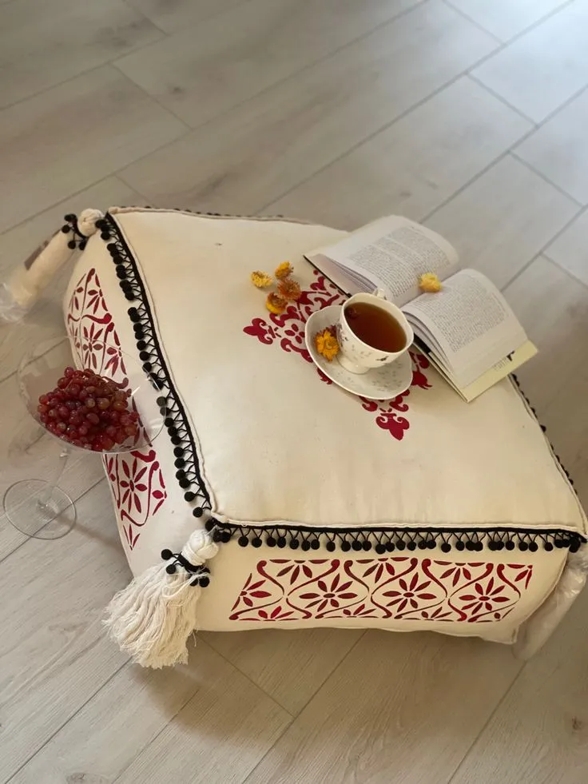
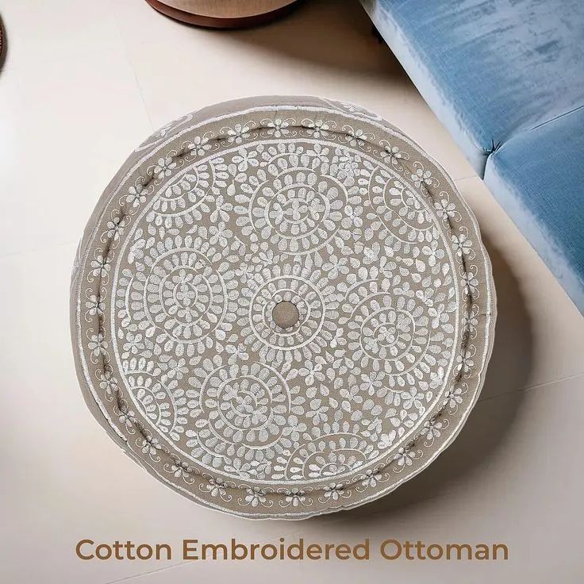
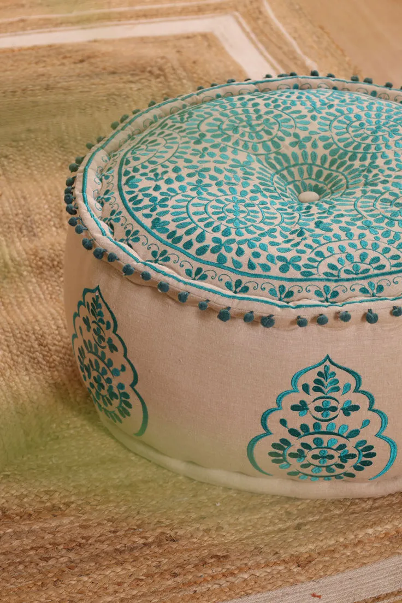
India's Largest Poufs & Ottomans Manufacturer
Poufs and ottomans both serve as versatile furniture and stylish home décor items. A pouf is typically soft, round or cube-shaped and easy to move, while an ottoman offers a firmer structure and sometimes built-in storage. At Shyamik Overseas, we design both with care using quality materials, durable stitching, and refined finishes to ensure long-lasting performance.
Our poufs and ottomans are crafted with materials of the same caliber to ensure they are resilient, long-lasting, and aesthetically pleasing. Our skilled artisans incorporate many trending patterns such as embroidered, printed, and plain dyed suited for outdoor and indoor styling. We craft our products with innovative techniques and it's available in different designs.
We market our products directly to retailers, online merchants, wholesalers, importers, and sourcing agents. Our main markets at the moment are Europe, the US, and Canada, but we also produce and export home furnishings to more than 53 different nations.
With a constantly growing vision, we next want to connect with our devoted customers in Australia and South Africa.
Over the course of our more than 10 years in business, we have developed our competence in the field of home textiles.
PRODUCTS PREVIEW
Take a peek at some of our best poufs and ottomans collection
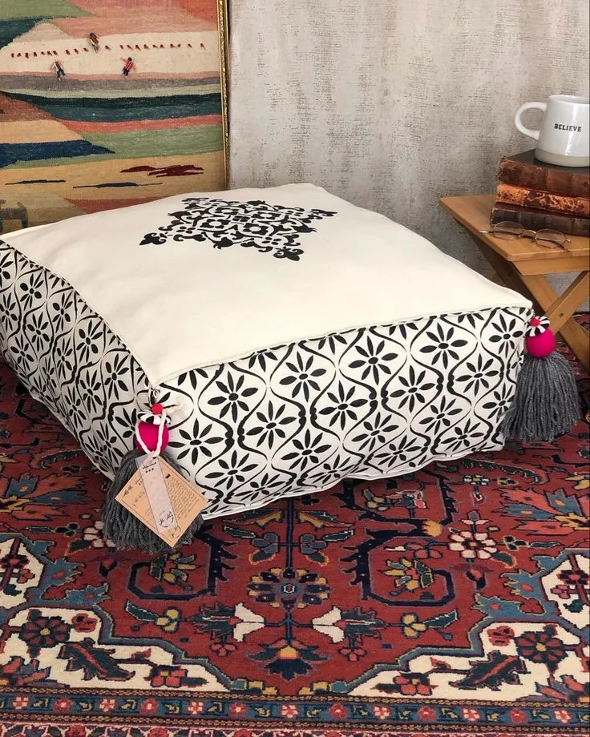
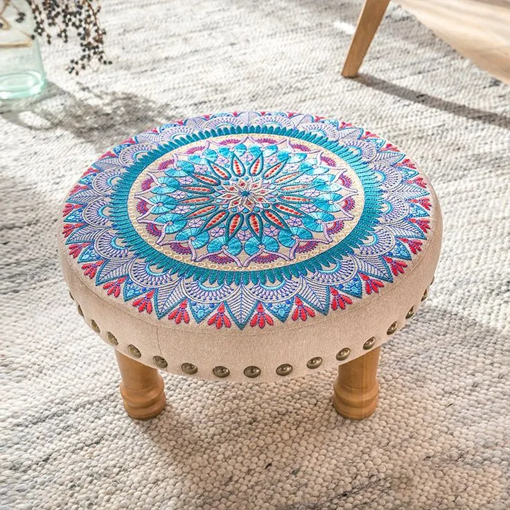
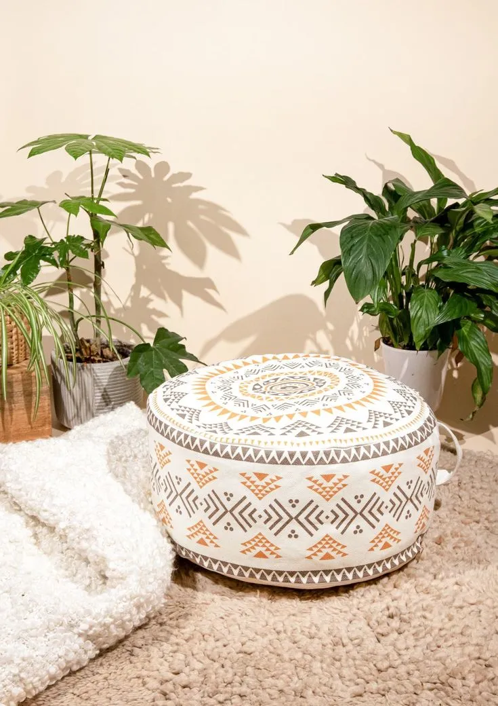
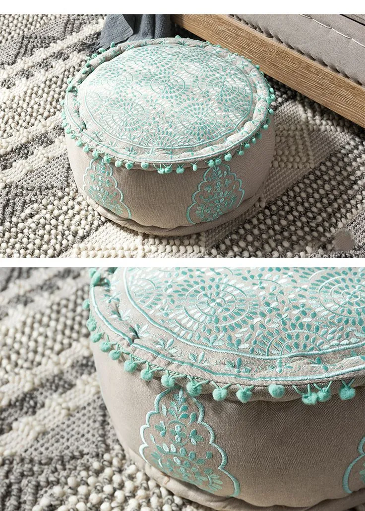
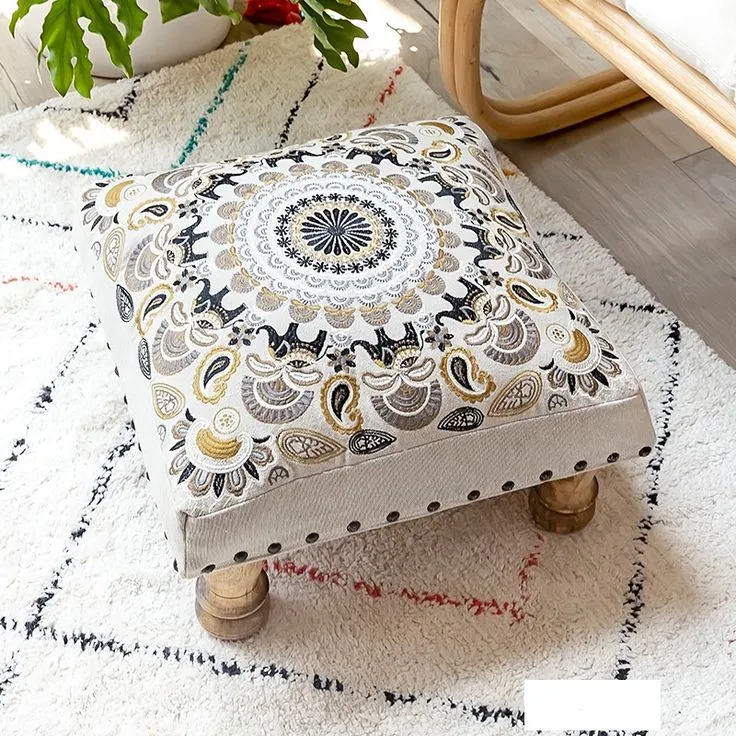
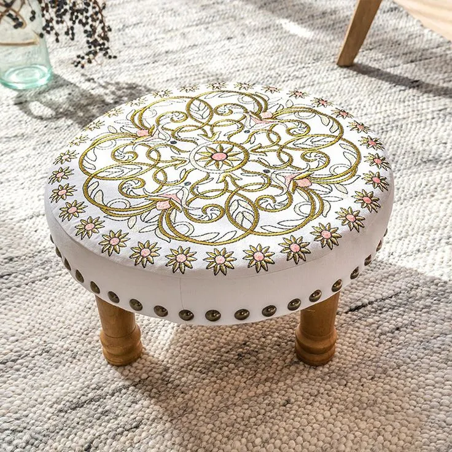
Crafted Comfort. Timeless Style.
Elevate your living spaces with handcrafted poufs and ottomans designed for modern interiors. A perfect blend of comfort, texture, and artisan detail.
◉ Handcrafted Designs
◉ Premium Fabric & Texture
◉ Versatile Home Styling
◉ Modern & Traditional Collection
OUR COLLECTION
Explore More Designs
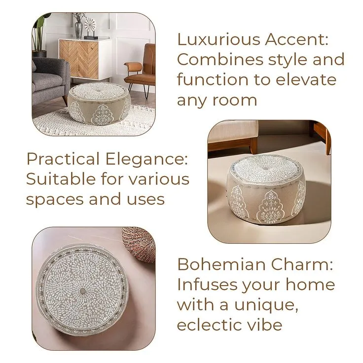
Crafted for Every Space
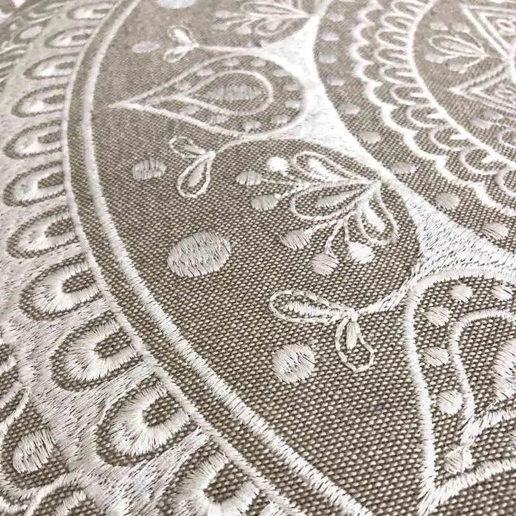
Artisan Embroidery
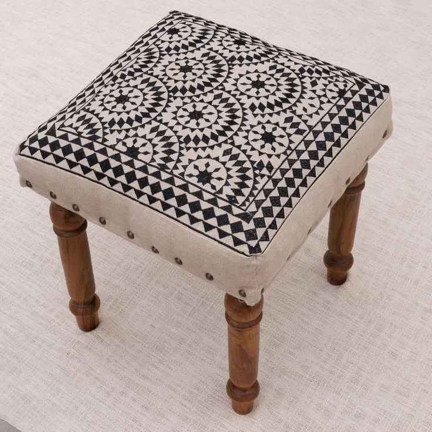
Geometric Patterns
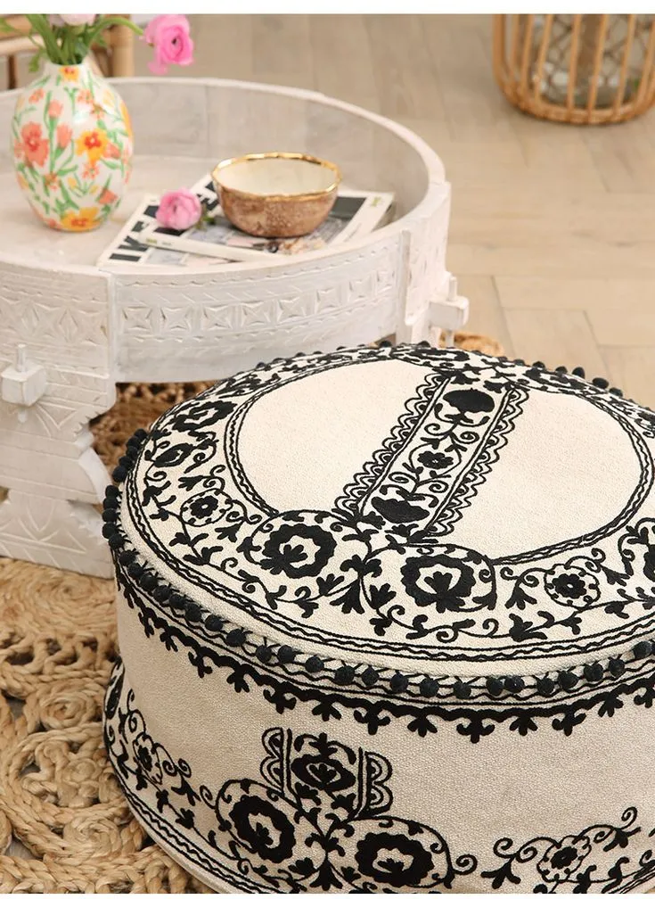
Monochrome Elegance
Poufs & Ottomans: Style Meets Functionality
Welcome to Shyamik Overseas's exclusive collection of Poufs & Ottomans, where comfort meets timeless design and craftsmanship. Each piece in our range is a perfect blend of style, softness, and sophistication crafted to elevate any modern living space. These premium home décor items are more than just accessories; they are versatile accents that bring warmth, texture, and character to your interiors.
1. What Is a Pouf vs. an Ottoman?
Poufs and ottomans both serve as versatile furniture and stylish home décor items. A pouf is typically soft, round or cube-shaped and easy to move, while an ottoman offers a firmer structure and sometimes built-in storage. At Shyamik Overseas, we design both with care using quality materials, durable stitching, and refined finishes to ensure long-lasting performance.
2. Styles & Designs for Every Interior
Discover a wide range of styles from boho-chic and Moroccan poufs to modern minimal ottomans. Choose from handwoven textures, knitted fabrics, leather, and decorative prints that suit your home's personality. Each Home Décor Item is crafted to enhance the beauty of your living room, bedroom, or lounge.
3. Manufacturing Excellence
As a proud Indian manufacturer, Shyamik Overseas ensures every piece reflects quality craftsmanship. Our Poufs & Ottomans go through careful inspection for durability, shape retention, and comfort. By blending traditional artistry with modern manufacturing, we deliver home décor items that last long and look beautiful.
4. Function Meets Comfort
Our poufs and ottomans are more than decorative they're functional home décor items built for everyday living. Use them as a footrest, extra seating, coffee table base, or statement piece. The perfect balance between softness and firmness ensures they're as comfortable as they are stylish.
5. Tailor-Made Comfort & Bespoke Design Options
Your home deserves décor that reflects your personality. At Shyamik Overseas, we make that possible through our customization and personalization service. From the size and shape to the fabric texture and color palette, every element of your pouf or ottoman can be tailored to suit your unique taste and interior theme.
6. Why Choose Shyamik Overseas?
Quality Construction: Made with premium fabrics and durable fillings. Design Expertise: Decades of experience in handcrafted home décor items. Global Delivery: Shipping available across India and worldwide. Custom Solutions: Personalizable designs for your home or project. Sustainability: We use eco-friendly materials and responsible production practices.
Frequently Asked Questions (FAQs)
Q1. Are poufs and ottomans suitable for small spaces?+
Yes, our ottomans are compact home décor items that fit easily in small spaces, offering comfort without clutter.
Q2. What materials do you use?+
We use high-quality fabrics, leather, and durable fillings such as foam and fiber for long-lasting comfort and structure.
Q3. Can I customize the design or fabric?+
Absolutely! Shyamik Overseas offers fully customizable Poufs & Ottomans to match your interior theme and personal style.
Q4. How do I maintain these home items?+
Vacuum regularly, spot clean with mild detergent, and keep away from direct sunlight to maintain color and texture.
Q5. Do you offer international shipping?+
Yes, we deliver our handcrafted home décor items to customers across the globe, ensuring safe packaging and timely delivery.
Request Our Catalogue
We are glad to know you are interested in our catalogues. Please fill in the form below and our merchandising team will get back to you shortly.